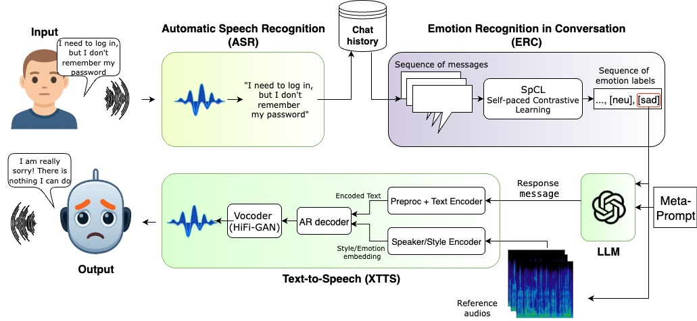

Knowledge Technology Group (WTM)
The rapid progress of large language models (LLMs) has accelerated the rise of interactive AI systems, yet most remain text-only and largely emotion-agnostic. Adding text-tospeech (TTS) enables voice interaction, but current state-of-the- art TTS models mostly offer indirect, coarse control over prosody and frequently fail to realize requested emotions. This mismatch between intended content and delivered tone undermines user trust in high-stakes settings such as customer support and healthcare. Two technical obstacles cause this gap: 1) content and prosody are tightly entangled, so an inappropriate emotion can degrade intelligibility, and 2) models tend to express the emotions that are standard for the given text. Addressing these issues is essential for emotionally coherent and controllable speech in LLM-driven interactions. Our approach proposes a modular human-robot interaction system that integrates an emotion recognition in conversations model with TTS to enable emotional awareness. Due to this integration, our TTS can decide on the correct emotion to answer, select appropriate reference audio to adapt its prosody in each interaction, and generate speech of an ”emotionally intelligent” robot. Additionally, we set a new baseline for an emotional dialogue system pipeline and automated evaluation of such systems.

Link to the Demo: https://eahris.com/